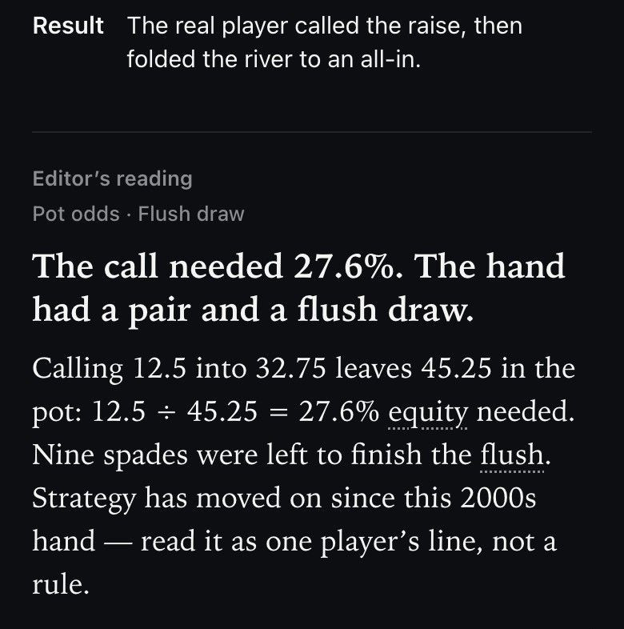
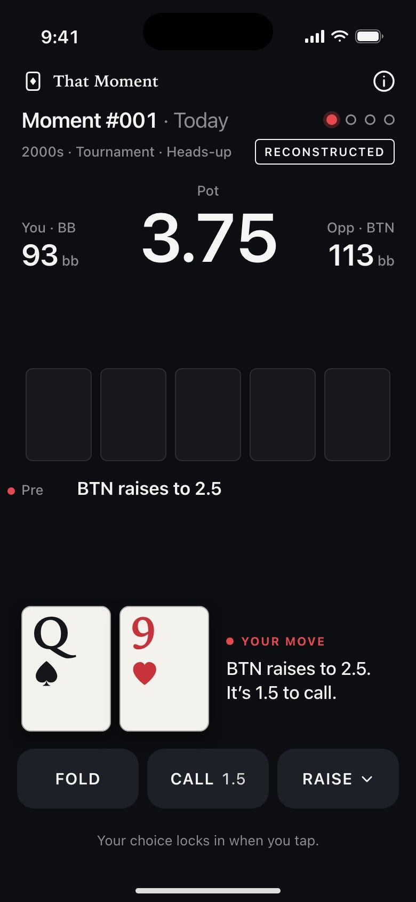
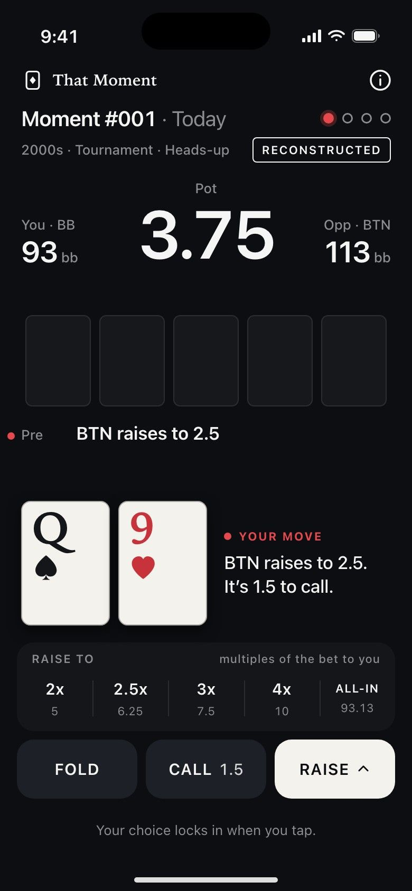
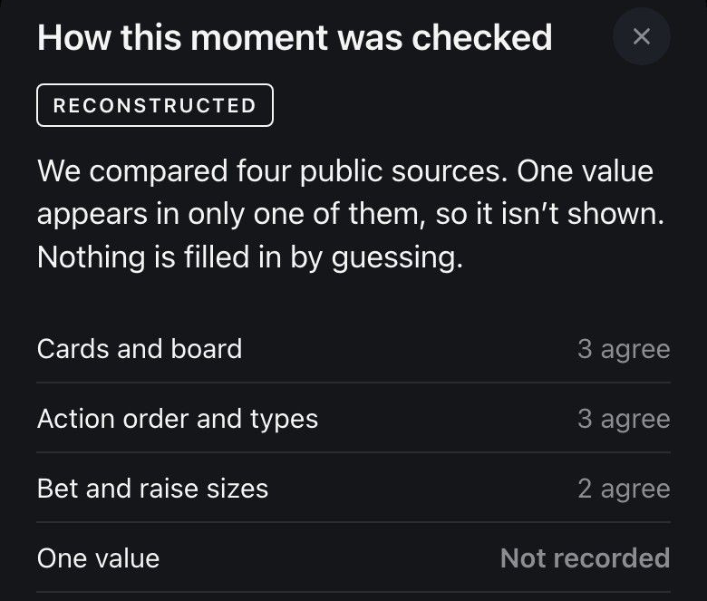
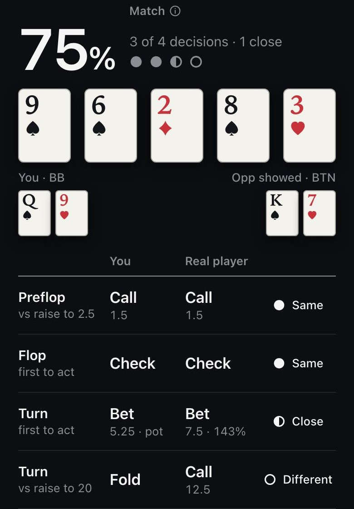
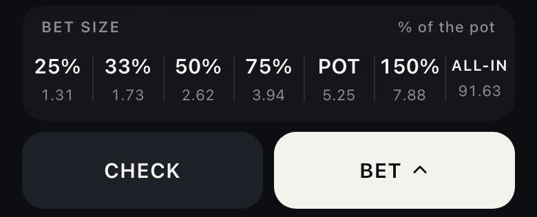

Read the why
Every result opens with a short written note on why a line might have been chosen. It is free, and it reads as one view, not a rule.
A poker decision trainer
Choose fold, call or raise, see what the player did, then read a written note on why.
See a moment play out

Choose fold, call or raise. Your pick locks when you tap.
Every moment shows one of three labels before you start.
Cross-checked means every value the game uses agrees in at least two sources.
Reconstructed means at least one value is missing, single-sourced or in conflict.
Recorded means the hand is copied whole from one complete machine-made hand history.

That Moment starts from the record and ends with a written note.
Screens on this page are design previews. Final screens may differ.

Every result opens with a short written note on why a line might have been chosen. It is free, and it reads as one view, not a rule.

Match compares your picks with the record, street by street. A match does not mean good play.

Bets and raises use fixed size steps. No typing, so every pick can be compared.
No sign-up, no permission prompts, no paywall in the way.

Send a 9:16 image with your Match. It never shows cards or names.
Every moment is built into the app, so it works offline. Your progress is saved on your phone.
PRO is a one-time purchase, not a subscription. The price is shown in the app before you buy, and nothing renews. Restore purchases from the PRO screen or the app’s Settings.
No. There is no solver and no AI coach. The PRO breakdown is plain arithmetic on the recorded actions, like what a call costs as a share of the pot, and stack-to-pot.
It does not rank plays. It shows the record, your choices next to it, and one reading of why.
No. That Moment is a study tool, not a casino or gambling app. There are no chips, balances, winnings, deposits or cash-outs, and nothing you do in the app can win or lose money.
Texas Hold’em, in heads-up pots: you and one opponent. Each moment has two to four decisions across at least two streets. There is no rules tutorial, so you should already know how a hand is played.
A short written note on each result about why a line might have been chosen. It is one way to read the moment, not a rule, and it never claims to know what the player was thinking. Each note is drafted with AI from the numbers in the record and reviewed by the editor. It is free on every result.
Each moment shows the era and the situation, nothing about who played it. No player or event names, no video. The focus stays on the decision and the record.
If a value is missing from the sources, or the sources disagree, the app says “Not recorded” instead of guessing. When the difference is small, the value is marked ≈. If a bet size is not recorded, that decision is compared on the action alone, and the result says so.
The share of your decisions that matched what the player did. The action has to be the same, and for bets and raises the size has to be the same step or one step away.
It compares, it does not judge. A match is not a sign of good play.
No account. Your progress is saved on your device. Deleting the app removes it, though a device backup can bring it back.
Optional. After a result the app can offer a reminder at a time you choose, and you can turn it on or off in Settings any time. It sends at most one a day, and the text is fixed and never shows a hand.
No. PRO is a one-time purchase, so nothing renews and there is nothing to cancel. Restore it from the PRO screen or the app’s Settings. Refunds are handled by Apple.